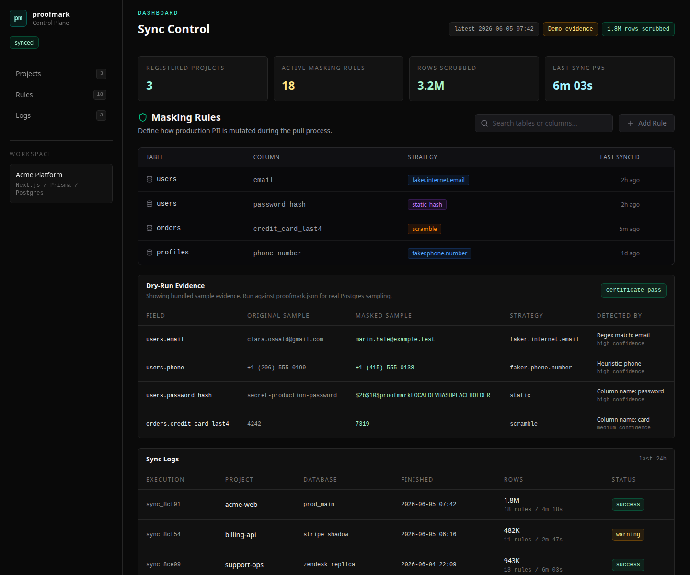

Inspect schema
Read your Prisma schema and show the PII rules before touching rows.

Stop feeding your frontend toy seed data. Proofmark samples a few production-shaped rows, masks the PII locally, and gives your team a dry-run report before anything gets copied.
Read your Prisma schema and show the PII rules before touching rows.
Pull a small Postgres sample from configured columns without writing to source or target.
Show the original sample, masked value, strategy, and certificate status in one place.
If your app has real users, it has weird data. Proofmark is for Next.js, React, Prisma, and Postgres teams that need production-shaped records without dragging real people into local development.
A patient intake form, a billing portal, a student dashboard, a support queue: the labels change. Your frontend still needs data that looks real, and your team still needs the names, emails, phone numbers, tokens, and IDs gone.
npm run cli -- pull --dry-run --demoSend a schema and one table that makes local testing painful. The dry run should prove the app still works without keeping the real identifiers.